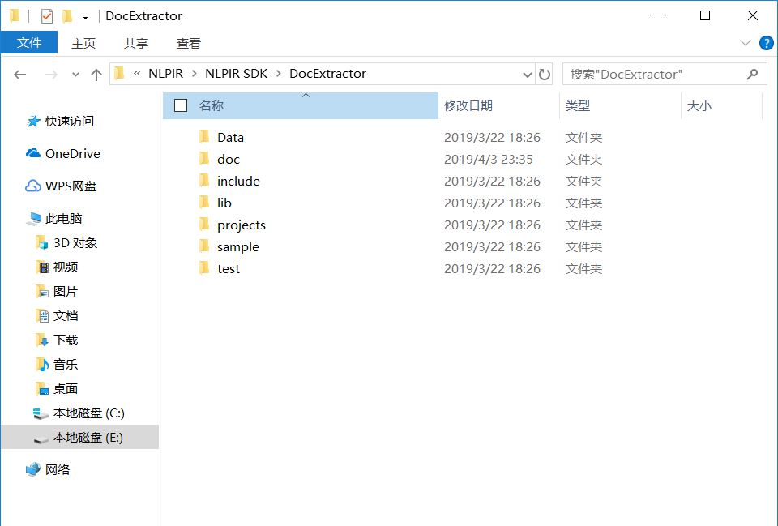

中文分词是自然语言处理的一个分支,自然语言即人们在日常生活中使用的语言，包含书面语，口语，例如报纸上的一篇通讯，博客里面的一篇文章。之所以称其为自然语言，是因为它区别于计算机语言，计算机语言的文法与组织方式较为规范，自然语言则贴近人们生活。自然语言处理作为一项技术，在搜索引擎，机器语义理解和对话系统中有着基础和决定性的作用和价值，这方面比较知名的例如微软的cortana(微软小娜)，以及国内各个互联网公司发布的智能音箱等。
北理工张华平版中文分词系统（NLPIR），又名中科院分词系统，是国内高校院所中开源力度相当大的一家（下文将简称北理工分词系统），另一家是哈工大中文分词系统(LTP)。北理工分词系统功能丰富，目前已经包含了以下功能：
NLPIR提供的组件包中含有13种SDK组件包:
每个组件包内容介绍
注：以下组装方式以实体抽取模块（DocExtractor）为例，平台为VS2012
前往Github下载源码，源码的数据量在740MB左右，因为DNS被禁的原因，一般网络的下载速度比较慢，几十kb的样子。博主的解决方法是使用国内的代码托管平台，例如博主使用的是码云( https://gitee.com）,可以与Github关联同一个账户，将Github中的项目fork到码云中再进行下载，速度可以上每秒0.5MB。解压之后，如下图所示
整个github项目解压后的内瓤
实体抽取组件的路径为：NLPIR\NLPIR SDK\DocExtractor，其中包含的文件如下图
SDK中所含内容
1.点击新建—>项目—>其他语言—>Visual C++ —>空项目，名称为：DocExtractorCppTest，解决方案名称为：NLPIR-DE；如下图所示
新建空项目
2.将路径(NLPIR\NLPIR SDK\DocExtractor\projects\DocExtractor_c++)中的main.cpp文件拷贝到项目目录下（我的路径为NLPIR-DE\DocExtractorCppTest\）。
3.把路径(NLPIR\NLPIR SDK\DocExtractor\lib\win32)下的DocExtractor.dll以及DocExtractor.lib两个文件拷贝到项目目录下（我的路径为NLPIR-DE\DocExtractorCppTest\）。
4.将(NLPIR\License\license for a month\DocExtractor文档提取授权)下面的DocExtractor.user拷贝到路径NLPIR\NLPIR SDK\DocExtractor\Data下
5.将DATA文件夹拷贝到新建的解决方案目录下
6.将路径NLPIR\NLPIR SDK\DocExtractor\include下的文件DocExtractor.h拷贝到项目目录下，我的路径为NLPIR-DE\DocExtractorCppTest
7.经过以上操作，新建项目文件如下图
解决方案目录下
项目目录下
9.在VS中右键单击项目—>添加—>现有项，把项目目录下的四个文件 DocExtractor.dll，DocExtractor.h，DocExtractor.lib，main.cpp添加进去，点击运行，而后报错，如下图所示，正常现象，这是因为部分代码没有修改的缘故。
10.将如图所示的红色框中的代码去掉就可以，使dll文件及lib文件正确读取。
去代码
11.去掉之后再点击运行就可以正常运行了，效果如下